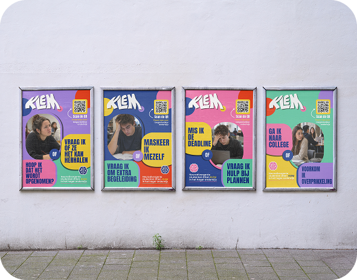
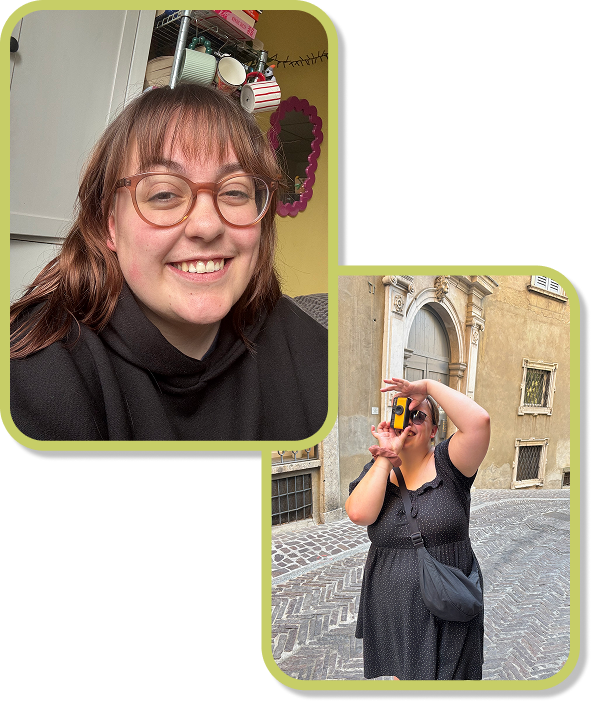
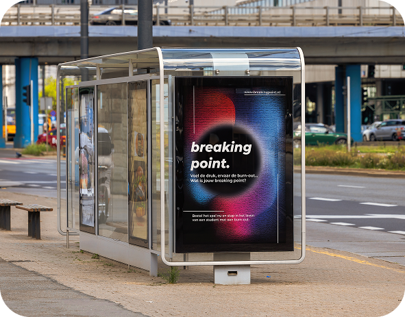
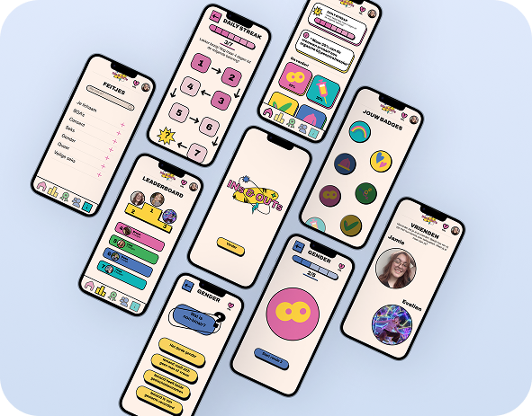

KLEM
KLEM is a campaign that raises awareness of neurodivergent students navigating a higher education system that was not designed with them in mind.

hi there, i'm jamie. this is my portfolio
Hi, welcome to my little corner of the internet! Take a look around and get to know the things I love to create. I’m a 26-year-old multimedia designer with a passion for graphic and web design, especially when design can make a difference, so I’m working towards specialising in social design, using creativity to communicate, connect and make an impact.


KLEM is a campaign that raises awareness of neurodivergent students navigating a higher education system that was not designed with them in mind.
Breaking Point is an interactive game that gives players insight into what it is like to live with burnout. By making energy levels, stress and everyday challenges tangible through play, it reveals the often invisible impact of burnout.


INs & OUTs is an educational quiz app designed to help young people learn about sex and sexuality in a playful and accessible way.